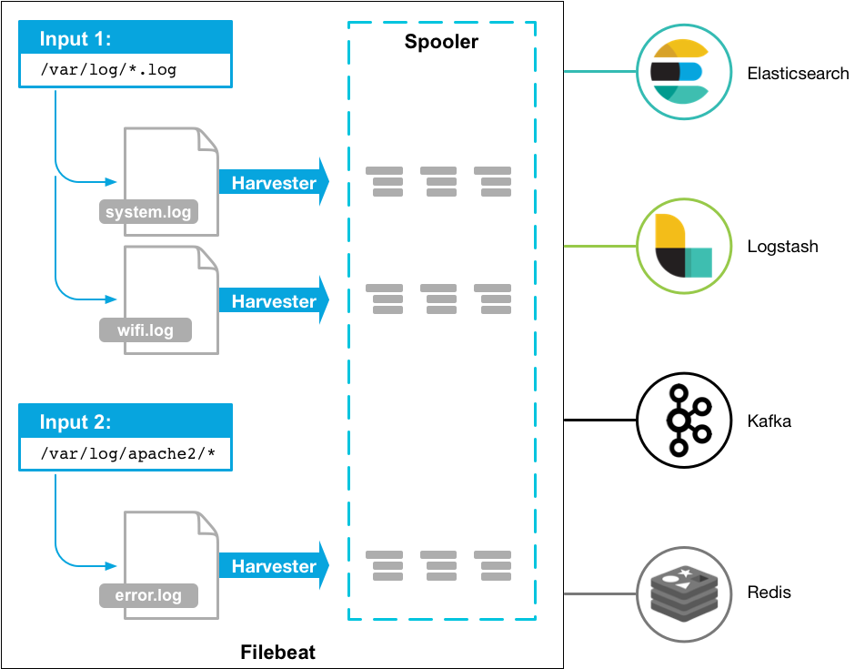
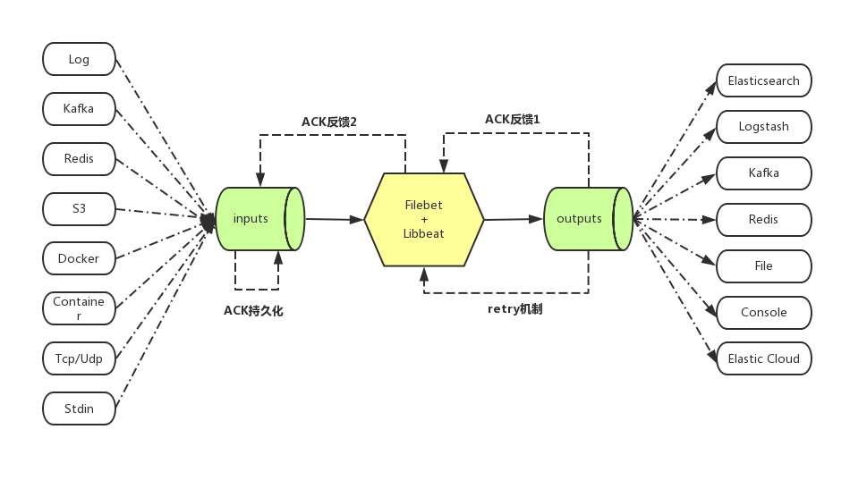
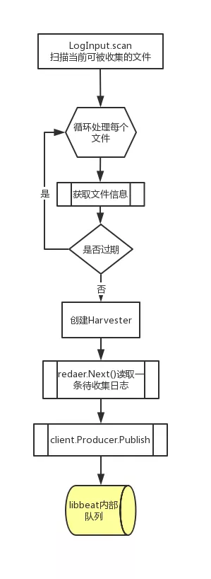
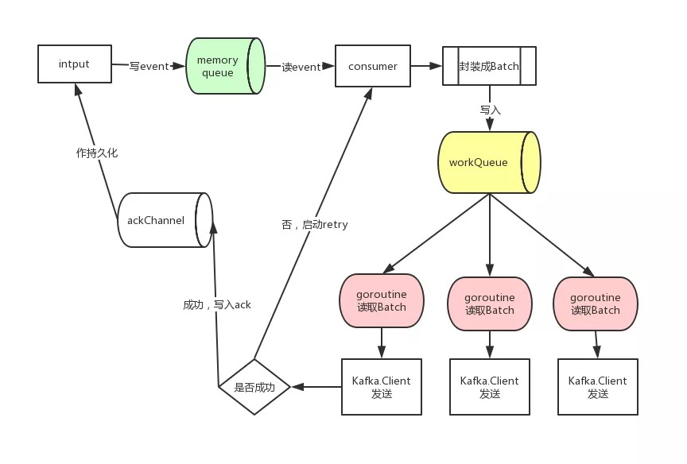

Linux系统共定义了64种信号，分为两大类：可靠信号与不可靠信号，前32种信号为不可靠信号，后32种为可靠信号。
Filebeat工作原理
一、概念
ELK架构中使用Logstash收集、解析日志，但是Logstash对内存、cpu、io等资源消耗比较高。相比Logstash，Beats所占系统的CPU和内存几乎可以忽略不计。Filebeat是使用Golang实现的轻量型日志采集器，是Beats的一员，也是ELK stack里面的一员。本质上是一个agent，可以安装在各个节点上，根据配置读取对应位置的日志，并将数据发送到指定的输出。Filebeat的可靠性很强，可以保证日志At least once的上报，同时也考虑了日志搜集中的各类问题，例如日志断点续读、文件名更改、日志Truncated等。
Filebeat工作原理如下：启动Filebeat时，它会启动一个或多个inputs，这些inputs将查找指定的log的路径。对于查找到的每个日志，Filebeat将启动一个harvester，每个harvester读取单个日志的新内容，并将新日志数据发送到libbeat，libbeat聚合事件并将聚合数据发送到配置的output。

Filebeat主要由两个组件组成并实现收集转发日志：inputs(<6.3版本是prospector)和harvesters，他们一起工作以读取文件(tail -f filename)，并将事件数据发送到指定的输出，具体如下：
- inputs，可理解为输入源，负责管理harvesters找到所有要读取的资源，最新版本支持的输入源类型。如果inputs类型为log，则inputs将查磁盘上与定义的全局路径匹配的所有文件，并为每个文件启动一个harvester，每个inputs都在自己的Go程序中运行。
- harvesters，意为采集器，负责读取单个文件内容。每个文件会启动一个harvester，每个harvester会逐行读取各个文件，并将文件内容发送到指定输出。
- Filebeat记录文件状态
- Filebeat将文件状态记录在文件中，默认Filebeat安装目录下
安装目录/data/registry/filebeat/log.json，此文件可以记住Harvester收集文件的偏移量，内容如：
- Filebeat将文件状态记录在文件中，默认Filebeat安装目录下
1 | {"k":"filebeat::logs::native::33601497-16777220","v":{"id":"native::33601497-16777220","prev_id":"","source":"/usr/local/nginx1.17.9/logs/error.log","FileStateOS":{"inode":33601497,"device":16777220},"identifier_name":"native","offset":1437332,"timestamp":[2062444718080,1619162438],"ttl":-2,"type":"log"}} |
Filebeat保证事件至少被输出一次
- Filebeat之所以能保证事件至少被传递到配置的输出一次，没有数据丢失，是因为Filebeat将每个事件的传递状态保存在注册文件中。
Filebeat能做什么
- Filebeat可以从多种不同的上游input中接受需要收集的数据，最常用的就是log input，即从日志中收集数据
- Filebeat对收集来的数据进行加工，比如：多行合并，增加业务自定义字段，json等格式的encode
- Filebeat将加工好的数据发送到被称为output的下游，其中最常用的就是Elasticsearch、Logstash、Kafka
- Filebeat具有ACK反馈确认机制，即成功发送到output后，会将当前进度反馈给input, 这样在进程重启后可以断点续传
- Filebeat在发送output失败后，会启动retry机制，和上一次ACK反馈确认机制一起，保证了每次消息至少发送一次的语义
- Filebeat在发送output时，由于网络等原因发生阻塞，则在input上游端会减慢收集，自适应匹配下游output的状态

Filebeat底层实现——
libbeat- libbeat提供了publisher组件，用于对接input
- 收集到的数据在进入到libbeat后，首先会经过各种 processor的加工处理，比如过滤添加字段，多行合并等等
- input组件通过publisher组件将收集到的数据推送到publisher内部的队列
- libbeat本身实现了前面介绍过的多种output, 因此它负责将处理好的数据通过output组件发送出去
- libbeat本身封装了retry的逻辑
- libbeat负责将ACK反馈通过到input组件
input仅需要做两件事
- 从不同的介质中收集数据后投递给libbeat
- 接收libbeat反馈回来的ACK，作相应的持久化
input从日志文件中收集日志的过程

- input的创建
- 根据配置文件内容创建相应的Processors, 用于前面提到的对从文件中读取到的内容的加工处理
- 创建Acker, 用于持久化libbeat反馈回来的收集发送进度
- 使用libbeat提供的Pipeline.queue.Producer创建producer，用于将处理好的文件内容投递到libbeat的内部队列
- 收集文件内容
- input会根据配置文件中的收集路径（正则匹配）来轮询是否有新文件产生，文件是否已经过期，文件是否被删除或移动;
- 针对每一个文件创建一个Harvester来逐行读取文件内容；
- 将文件内容封装后通过producer发送到libbeat的内部队列；
- 处理文件重命名、删除、截断
- 获取文件信息时会获取文件的
device id + inode作为文件的唯一标识; - 文件收集进度会被持久化，当创建Harvester时首先会对文件作openFile, 以
device id + inode为key在持久化文件中查看当前文件是否被收集过，收集到了什么位置，然后断点续传 - 在读取过程中，如果文件被截断，则认为文件已经被同名覆盖，将从头开始读取文件
- 在读取过程中，如果文件被删除，因为原文件已被打开，不影响继续收集；但如果设置了CloseRemoved，则不会再继续收集
- 在读取过程中，如果文件被重命名，因为原文件已被打开，不影响继续收集，但如果设置了CloseRenamed，则不会再继续收集
- 获取文件信息时会获取文件的
- input的创建
日志发送过程

- input将日志内容写入libbeat的内部队列后，剩下的事件就都交由libbeat来做了
- libbeat会创建consumer，复现作libbeat的队列里消费日志event，封装成Batch对象
- 针对每个Batch对象，还会创建ack Channel，用来将ACK反馈信息写入这个channel
- Batch对象会被源源不断地写入一个叫workQueue的channel中
- 以kafka output为例：
- 在创建kafka output时首先会创建一个outputs.Group，它内部封装了一组kafka client, 同时启动一组goroutine
- 每个goroutine都从workQueue队列里读取Batch对象，然后通过kafka client发送出去，这里相当于多线程并发读队列后发送
- 若kafka client发送成功，写入信息到ack channel, 最终会通过到input中
- 若kafka client发送失败，启动重试机制
- 以kafka output为例：
- 重试机制，仍以kafka output为例：
- 如果msg发送失败，通过读取
ch <-chan *sarama.ProducerError可以获取到所有发送失败的msg - 针对
ErrInvalidMessage、ErrMessageSizeTooLarge、ErrInvalidMessageSize这三种错误无需重发 - 被发送的
event都会封装成Batch，这里重发的时候也是调用Batch.RetryEevnts - 最后会调用到
retryer.retry将需要重新的events再次写入到上图中黄色所示的workQueue中重新进入发送流程 - 关于重发次数可以设置
max retries，但从代码中看这个max retries不起作用，目前会一直重试，只不过在重发次数减少到为0时，会挑选出设置了Guaranteed属性的event来发送; - 如果重发的events数量过多会暂时阻塞住从正常发送流程向workQueue中写入数据，优先发送需要重发的数据；
- 如果msg发送失败，通过读取
二、使用
- Filebeat配置采集2个文件夹下的日志并转发至Logstash。
- Filebeat配置6.0版本以前支持document_type，6.0以后就不支持了，改用fields
1 | filebeat.inputs: |
- Logstash配置解析日志并输出至Elasticsearch
1 | input { |
三、参考
Filebeat模块
一、概念
Filebeat模块提供了一种快速处理常见日志格式的快速方法，可以快速实施和部署日志监视解决方案，并附带示例仪表板和数据可视化。它们包含默认配置、Elasticsearch接收节点、管道定义、Kibana仪表板等，可以快速实施和部署日志监控。这些模块支持常见的日志格式，如Nginx、Apache2、MySQL等。
启用模块的几种方式
用modules.d目录启用模块配置
./filebeat modules enable module_name
运行Filebeat是启用模块
./filebeat --modules module_name
在配置文件中启用模块
1
2
3
4filebeat.modules:
- module: nginx
- module: mysql
- module: system
命令
1 | ./filebeat modules |
二、使用
- 查看模块
./filebeat modules list
1 | Enabled: |
开启模块
./filebeat modules enable nginx再次查看
./filebeat modules list
1 | Enabled: |
设置环境
./filebeat setup -ecd your_path/modules.d && vim nginx.yml
1 | - module: nginx |
启动服务
./filebeat -e- 默认
filebeat.yml，只需要改两项
1
2
3
4
5setup.kibana:
host: "localhost:5601"
output.elasticsearch:
hosts: ["localhost:9200"]- 默认